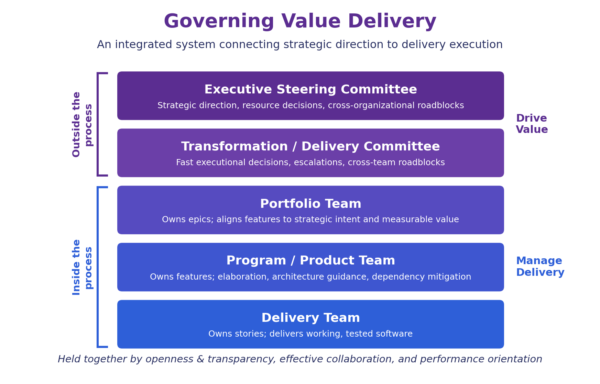

Services · Accelerating Value Delivery
Accelerating Value Delivery
Most organizations don't have a delivery problem. They have an alignment problem. We install an integrated system of delivery that connects your strategy to every epic, feature, and story your teams build, so effort turns into measurable business value.
Schedule a ConversationThe Problem
Busy Teams. Full Backlogs. Lagging Value.
Teams are busy, backlogs are full, and yet delivered value lags. The usual culprits are not effort or talent. They are misalignment between strategy and work, handoffs without shared understanding, and governance that slows decisions instead of accelerating them. The result: features that miss the mark, rework, and delivery that feels slower every quarter.
Our Approach
An Integrated System of Delivery.
Accelerating Value Delivery combines three elements into one operating system for delivery. Each element works on its own; together they compound.
01 · Strategy-Driven Value
Every piece of work traces to strategy. Initiatives express strategy and investment, epics capture the opportunity or problem, features define targeted value, and stories deliver it. At each stage, three enablers keep both business and delivery accountable: shared understanding, collaboration, and agreement.

02 · Readiness and Done, Defined
A Definition of Ready gates each stage of value creation, ensuring the right thinking, discussion, and documentation happened before work moves forward. A Definition of Done verifies that completed work meets the targeted value. Together they keep backlogs well-formed and give teams clarity instead of confusion.
- Epics ready before features; features ready before stories
- Measurable problem statements, outcomes, and success criteria at the epic level
- Binary acceptance criteria and INVEST-compliant stories at the delivery level
- Done means accepted, tested, compliant, and promoted, not just coded
03 · Governance That Accelerates
Governance is usually where speed goes to die. We design it as the accelerator: five connected tiers with clear decision rights, weekly cadences measured in hours (not days), and a single purpose, removing whatever slows the flow of value.

What You Get
Delivered With the System, Not Just a Deck.
- A value-alignment model connecting strategy to every level of work
- Definitions of Ready and Done tailored to your organization, with business, technical, and financial signoff built in
- A five-tier governance design with roles, responsibilities, artifacts, and meeting cadences
- Coaching for portfolio, product, and delivery teams through adoption
- Measurable outcomes: faster decisions, fewer handoff failures, value delivered per quarter
Who It's For
Technology and product organizations that have adopted agile practices but still struggle to connect strategy to delivery, and executives who want visibility and speed without adding bureaucracy.
Ready to Accelerate?
Let's talk about where value is getting stuck in your organization and how an integrated system of delivery can unlock it.
Schedule a Conversation